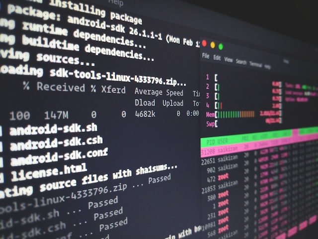

We started off this week by learning about the Command Line. This is something I’ve shied away from in the past as it seemed like a more complicated way of getting tasks such as creating files, creating folders and running applications done. Instead of clicking on buttons within Finder (or File Explorer if you’re on Windows) you have to type commands into a window which looks very much like a basic text editor making me feel on the one hand like I’ve travelled back in time to the early days of Personal Computing and on the other like I’m a “Real” programmer - do you recall the scenes in movies when a hacker tries to break into a computer system by typing into a blacked out screen showing cryptic text and binary numbers reminiscent of The Matrix? Well that’s the Command Line!

In reality it is not that daunting at all. Yes there is a whole new set of syntax that you have to learn like mkdir Folder-1, which creates a new folder called Folder-1 in your current folder
but they are usually abbreviations of semantic commands. In this example mkdir stands for “Make Directory” so it’s fairly easy to make the connection. In addition, there are many tasks that are
much faster to do in the Command Line than using a GUI like chmod which stands for “Change Mode”. It allows you to change the access permissions of various users on file system objects.
We went on to set up our development environments. This is one of the most frustrating tasks I experienced when I was learning on my own. I would follow the instructions exactly as they were outlined but as I started to use the application, it would never work as expected. The error messages often don’t make a lot of sense either and after a couple of hours googling but making little progress I would often give up. This is why I think cloud based platforms like Replit and Stackblitz are great for beginners because they remove the need to do the initial setup so you can jump into learning a programming language. With the iO Academy though the process was a breeze. Then we went on to learn about Git and Github. Similar to the Command line I had a vague idea of what they did but never used it on my own. This diagram that was included in our notes gives a really good overview of it though.
Git is a tool that tracks all changes to a folder that you specify on your PC. It provides a Staging Area where you can add files that you intend to commit to a local repository. Making a commit is like taking a snapshot of those staged files for future reference. You can then share these committed files with others by sending it to a remote repository which is usually hosted in the cloud. The arrows shown in the diagram give a visual representation of what the common commands do. For example git pull tells git to go to the remote repository and fetch all the latest files and put them in your workspace so you can see them. After trying it out, it is definitely not as bad as it seems and I can see how this can be extremely helpful when working in a team.
To finish off the week we started learning about PHP, what it is, it’s role in the LAMP (Linux Apache MySQL PHP) stack then the fundamentals (defining variables / constant, data types, performing operations, conditionals and loops). I won’t go into much detail on this because the resources online do a much better job. If your interested the safest bet is probably the actual PHP documentation. But if your tight for time Fireship.io gives a really good overview in 100s.